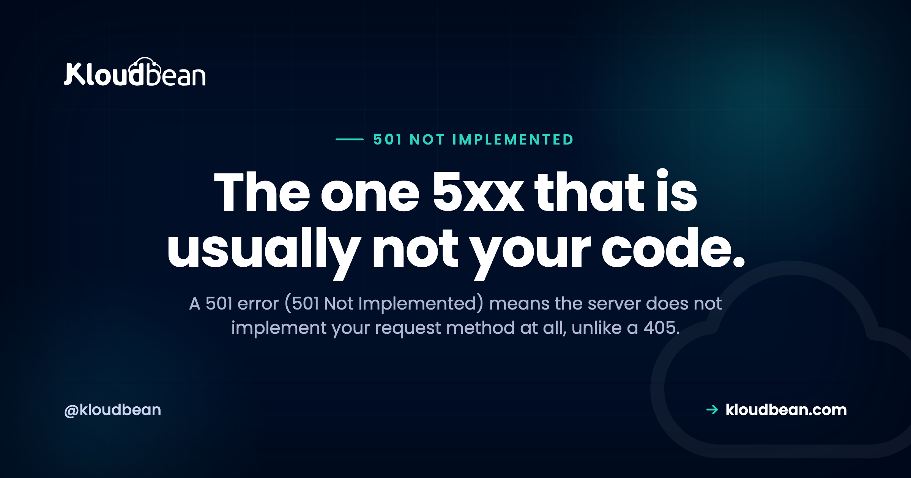

501 Error: Not Implemented Means the Server Can't, Not Won't

A 501 error is the server telling you it does not implement what you asked for, at all. Not for this URL, not for any URL. That one fact makes error 501 one of the more honest status codes, and it separates it cleanly from its neighbours: a 405 knows your method and refuses it here, a 500 ran your code and crashed. So before you change anything, classify. An HTTP 501 almost always points at a layer in front of your application, some proxy or gateway that was never taught the method you sent, rather than a bug in your framework. Get the classification right and you have done most of the fixing.
Per RFC 9110, a 501 Not Implemented means the server does not support the functionality needed to fulfil the request, usually because it does not recognise the request method and cannot support it for any resource. Servers are required to support GET and HEAD, so those never return 501. That points you at the method (a PUT, PATCH, DELETE, or a WebDAV verb like PROPFIND) and at whichever layer sits in front: an edge, a proxy, or a minimal server that only speaks GET and HEAD. Reproduce it with curl against each hop, find the layer that says no, and fix that layer.
A 501 error next to 405, 500, 502, and 404
This is the whole game. A 501 gets misread as a generic server crash, and then people go hunting through application code that never even saw the request. Line it up against the codes it gets confused with, and the search space collapses fast.
| Code | What it proves | Where to look |
|---|---|---|
| 501 Not Implemented | The server does not implement this method or feature, for any resource | The layer in front: edge, proxy, gateway, or a minimal server |
| 405 Method Not Allowed | The method is understood, just not allowed on this resource | Your route config and its Allow header |
| 500 Internal Server Error | Your app ran and threw | Your application error log |
| 502 Bad Gateway | The proxy reached your app but got no usable answer, often a dead process | 502 Bad Gateway |
| 404 Not Found | The path does not exist | Your routing and the URL |
The 501 against 405 line is the one worth memorising, because it is where most of the confusion lives. A 405 means the server knows the verb and is capable of it, it just will not run it on that path. A 501 means the server does not know the verb at all and could not run it anywhere. Capable but refusing versus incapable. Won't here versus can't, full stop. Once you feel that difference, you already know which layer to interrogate first.
Why a 501 is usually not your app
Here is an opinion, and it holds up in practice. If a plain REST verb like PUT or PATCH comes back 501, your application framework is almost never the culprit. Express, Laravel, Django, Rails, FastAPI: they all implement those methods perfectly well. What returns 501 is something in front that was never configured to pass the verb through, or a barebones server that only ever learned GET and HEAD.
The spec backs the instinct. Servers must support GET and HEAD, so those two can never legitimately produce a 501. Which means a GET returning 501 is a strong signal of a badly broken or fake front-end, and a PATCH returning 501 while GET works fine tells you the front door is filtering by method. Neither points at your route handlers.
The decisive test: curl each method at each hop
Do not theorise about which layer is responsible. Ask each one directly. The trick is to send the failing method to the origin on its own, then through the public front door, and compare. Where the answer changes is where the 501 is born.
# Ask the origin directly, bypassing any edge or CDN.
curl -i -X PATCH https://origin.example.com/thing
# Now the same request through the public hostname.
curl -i -X PATCH https://example.com/thingIf the origin answers 200 or 405 and the public hostname answers 501, you have found it: a front layer is rejecting the verb before it ever reaches the app. If both answer 501, the server actually running your app is the one that does not implement the method, which is the minimal-server case below.
A fast way to see the whole shape at once is to sweep every common method and read the status codes side by side:
for m in GET HEAD POST PUT PATCH DELETE OPTIONS; do
printf '%s\t' "$m"
curl -s -o /dev/null -w '%{http_code}\n' -X "$m" https://example.com/thing
doneGET and HEAD returning 200 while PUT, PATCH, and DELETE return 501 is the classic method-filtering signature. Now confirm it in the logs, because the log tells you whether the request reached your application at all:
# Did the request even land on the app, or did the front door answer?
sudo tail -50 /var/log/nginx/access.log | grep ' 501 '
sudo tail -50 /var/log/nginx/error.logIf the 501 shows up in the proxy log but there is nothing in your application log for that request, the app never saw it. That single observation ends a lot of wasted debugging. If you have not made your app logs searchable yet, structured logging turns this into one query instead of a scroll.
What actually triggers a 501
A handful of real causes cover almost everything. Find your row, then read the note under the table for the ones with a giveaway string.
| Cause | Where it lives | The tell |
|---|---|---|
| A proxy or gateway not configured to pass the method | Edge, reverse proxy, or API gateway | Origin accepts the verb, the front door returns 501 |
| A minimal server that only implements GET and HEAD | The server process itself | Real string: code 501, message Unsupported method ('POST') |
| An unrecognised or non-standard method | Almost any server | Garbage verbs from a scanner, a fuzzer, or a broken client |
| A Transfer-Encoding the server cannot decode | The receiving server | Rare, but a hand-built client or odd proxy chain can trigger it |
| A WebDAV method with no WebDAV module loaded | Apache or nginx without the module | PROPFIND, MKCOL, and friends against a plain web server |
| A route that was never built | Your application | A deliberate 501 stub for a planned endpoint |
The minimal server. Reach for a quick static server, say Python's http.server for local previews, then POST to it, and you get a textbook 501: code 501, message Unsupported method ('POST'). That handler implements GET and HEAD and nothing else. It is doing exactly what the spec says, telling you it does not implement POST anywhere. The same thing happens with plenty of embedded and single-purpose servers. If a static host is answering your writes, a 501 is the polite version of no.
Unknown verbs. Apache answers a request method it does not recognise with a blunt 501 Method Not Implemented. Most of the time this is not a real user. It is a bot spraying junk verbs, a security scanner, or a client library that mangled the request line. If your logs show 501s on methods you have never heard of, that is background internet noise finding your front door, not a bug you introduced.
The one legitimate 501 from your own code is the deliberate stub. Returning 501 for an endpoint you have scaffolded but not finished is correct and honest, arguably better than a fake 200. Just be deliberate about it, and do not leave a stub in front of code you actually shipped.
Fixes that cannot work, and one that hides the problem
Because a 501 comes from the server, the usual browser-side rituals do nothing. Clearing your cache, switching browsers, toggling extensions: none of them touch a decision made on a machine you are not sitting at. The request has to leave your device and be refused elsewhere before a 501 exists.
There is one twist here that genuinely trips people, and it is worth knowing. A 501 response is cacheable by default. So an intermediary, or even the browser, can hold on to a 501 and keep serving it after you have already fixed the origin. You push the proxy change, you test in the browser, you still see 501, and you conclude the fix failed. It did not. You are looking at a cached copy. This is exactly why the curl tests above matter: curl skips the browser cache and asks the server fresh. Confirm with curl first, then purge the edge cache or wait it out before you trust what the browser shows you.
And a quick anti-pattern to avoid. When the front door rejects a verb, do not paper over it by making the proxy return 200 for unknown methods, and do not go editing your application, which never received the request. Both aim at the wrong layer. Fix the proxy or gateway to pass the method it is supposed to pass, or accept the 501 as the correct answer for a verb you genuinely do not support.
When a 501 is the right answer
Not every 501 is a bug to squash. If a client sends a method your service was never meant to implement, 501 is the honest reply. If you are building an API and an endpoint is planned but unbuilt, a 501 stub communicates that clearly. The mistakes are at the edges: returning 501 when you mean 405 (you know the verb, you just do not allow it there), or returning 501 when you mean 400 (the request itself was malformed). And the hard rule stays the hard rule. GET and HEAD must work, so never answer those with 501. Whether nginx or Apache is the better fit for how you route methods is its own topic, covered in nginx versus Apache.
The infrastructure question underneath
The honest boundary first. If your own application deliberately returns 501, or genuinely does not implement a feature, that is your code and no host changes it. What a managed platform can retire is the other, more common kind of 501: the one that comes from a reverse proxy or gateway in front of your app that was never configured to pass the method you send.
On Kloudbean the reverse proxy, nginx or Apache, is managed and patched, so it is set up to hand your application's requests to your application rather than left as an exercise in method filtering and location-block ordering. Application and server logs sit in the same dashboard as the server, so the log check above does not start with an SSH session and a hunt for the right path. You get a Shorewall and Fail2ban baseline, free SSL issued and renewed, staging for WordPress and Laravel so a routing change can be tried somewhere harmless, and automatic backups behind it all. Seven cloud providers to run on, from $8 a month on standard plans (check the pricing page for current numbers), and free migration assistance if you are moving something that already works. There is a built-in Flexible Load Balancer you can switch on when you actually need it.
The line stays where it always is. Certificates, patches, backups and the stack come with the platform. Your application code and your data remain yours. What a host removes is the proxy and method-routing guesswork, plus the friction of reaching the logs that tell you which layer said no.

When the obvious fix fails
The twin you will confuse it with, 405 Method Not Allowed, where the verb is known and simply not allowed on that route. The generic crash it gets mistaken for, 500 Internal Server Error, and the dead-upstream case, 502 Bad Gateway. For a wrong path rather than a wrong verb, 404 Not Found. On the layer that usually emits a 501, nginx as a reverse proxy for Node and nginx versus Apache. Its 5xx sibling that refuses the HTTP version rather than the method, 505 HTTP Version Not Supported. At the edge, Cloudflare's 5xx codes. And to make the logs worth reading, structured logging in Node.
Deploys that tell you what broke.
Deploy from Git, watch the build output as it runs, and open the app error log when a process refuses to start. Managed processes restart on crash, and backups are automatic.
- ✓ Live build logs
- ✓ Deployment history
- ✓ Logs viewer
- ✓ Managed process restarts
- ✓ Automatic backups
- ✓ Git deploy
Plans from $8/mo · Free migration assistance · Free trial
FAQ
What does a 501 error mean?
Per RFC 9110, a 501 Not Implemented means the server does not support the functionality needed to fulfil the request, usually because it does not recognise the request method and cannot support it for any resource. It is more specific than a 500. A 500 means the app ran and threw, while a 501 means the server never knew how to handle what you sent in the first place.
What is the difference between a 501 and a 405 error?
A 405 means the method is known and understood by the server but is not allowed on that particular resource, so it should include an Allow header listing what is permitted. A 501 means the method is not implemented anywhere on the server. The short version: 405 is won't do it here, 501 is can't do it at all.
What is the difference between a 501 and a 500 error?
A 500 Internal Server Error means your application received the request, executed, and raised an exception it could not handle, so the fix lives in your code and its error log. A 501 usually means the request was refused by a layer in front of your app because that layer does not implement the method. One is a crash in your code, the other is a capability gap in the path.
What causes an HTTP 501 error?
Most often a proxy, gateway, or CDN that was never configured to pass the method you sent, such as PUT, PATCH, DELETE, or a WebDAV verb. Other causes are a minimal server that only implements GET and HEAD, an unrecognised or non-standard method from a scanner or broken client, a Transfer-Encoding the server cannot decode, or a deliberate stub for an endpoint that is not built yet.
How do I fix a 501 Not Implemented error?
Reproduce it with curl using the failing method, first against the origin directly and then through the public hostname, to find which layer returns the 501. If the front layer is the source, configure your proxy or gateway to pass that method through. If the server itself does not implement it, use a server that does or a different method. Then read the access log to confirm whether the request ever reached your application.
Does clearing my browser cache fix a 501 error?
No. The 501 is decided on the server, so nothing in your browser participated in it. There is one catch worth knowing: a 501 is cacheable by default, so an intermediary or the browser can keep serving an old 501 after you have fixed the origin. Test with curl, which skips the browser cache, and purge the edge cache before you trust what the browser shows.
Is a 501 error my fault or the server's?
It is server side, so as a visitor there is essentially nothing to fix on your end beyond trying again later or telling the site owner. If you run the site, it is usually a configuration gap in a proxy or gateway rather than a bug in your application code, because most frameworks implement the common verbs fine. GET and HEAD returning 501 is a sign of a badly broken or fake front-end.
Why does my POST request return a 501 error?
Because something in the path only implements GET and HEAD and treats POST as unsupported. A minimal static server is the classic case, for example Python's http.server, which logs code 501, message Unsupported method for a POST. Send that POST to a server or route that actually handles writes, or fix the front layer so the request reaches an app that does.
Can a reverse proxy or CDN cause a 501 error?
Yes, and it is the most common cause of a surprising one. A proxy, gateway, or CDN can be set to forward only certain methods and answer 501 for the rest before your app is ever reached. The way to prove it is to curl the origin directly and compare with the public hostname. If the origin accepts the verb and the public host returns 501, the front layer is the source.